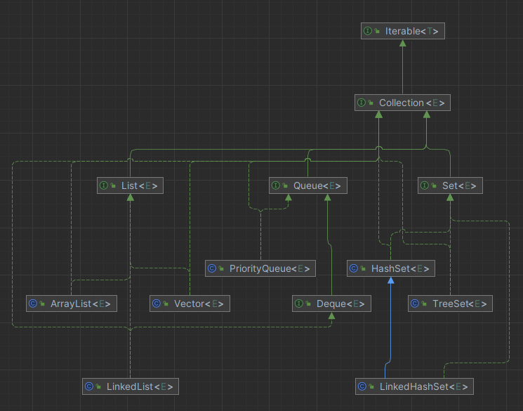
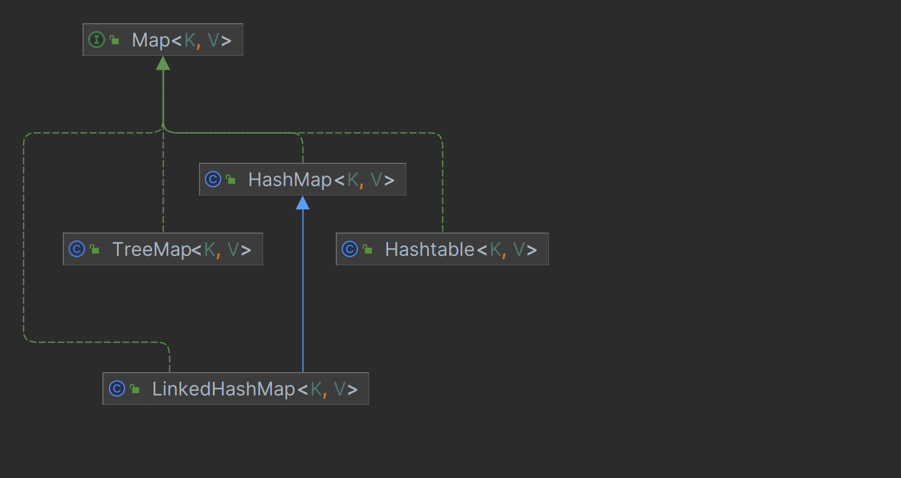

集合
Collection


List
- ArrayList
- 基于动态数组实现
- 支持随机访问 RandomAccess
- Vector
- 和ArrayList一样 线程安全
- LinkedList
- 基于双向链表实现
Set
- HashSet
- 基于哈希表实现 快速查找 无序的
- LinkedHashSet
- 使用双向链表维护元素的插入顺序
- TreeSet
- 基于红黑树 自然排序
Queue
- Queue 单端队列
- LinkedList
- PriorityQueue 一个基于优先级堆的无界优先级队列，元素根据其自然顺序或者构造时指定的
Comparator进行排序
- Deque 双端队列
- LinkedList
Map
-
HashMap
- 基于哈希表实现
-
HashTable
-
线程安全 使用 ConcurrentHashMap 来支持线程安全 ConcurrentHashMap 引入了分段锁
-
LinkedHashMap
-
维护着一个双向链表来记录插入顺序或访问顺序
-
TreeMap
-
TreeMap 是基于红黑树的 NavigableMap 实现
Iterator
创建一个Iterator实例并开始遍历集合时，迭代器的“指针”或“游标”位于集合的第一个元素之前， 而不是指向第一个元素。这意味着，在调用next()方法之前，迭代器并不指向任何元素 - boolean hasNext()：如果迭代器中还有元素可以遍历，则返回true。 - E next()：返回迭代中的下一个元素，并且更新迭代器的状态。 - void remove()：从集合中移除next()方法最后一次返回的元素，这个方法可以在执行next()方法后调用。 - forEachRemaining(Consumer<? super E> action) 对每个剩余元素执行给定操作
public class IteratorExample {
public static void main(String[] args) {
List<String> programmingLanguages = Arrays.asList("Java", "Python", "C++", "JavaScript", "Kotlin");
Iterator<String> iterator = programmingLanguages.iterator();
// 假设我们已经遍历了前两个元素
if (iterator.hasNext()) iterator.next(); // 遍历"Java"
if (iterator.hasNext()) iterator.next(); // 遍历"Python"
// 现在，我们想对剩余的元素执行操作
Consumer<String> action = System.out::println; // 定义一个简单的打印操作
// 使用forEachRemaining应用这个操作
iterator.forEachRemaining(action);
}
}
ublic class IteratorRemoveExample {
public static void main(String[] args) {
List<String> programmingLanguages = new ArrayList<>(Arrays.asList("Java", "Python", "C++", "JavaScript", "Kotlin"));
Iterator<String> iterator = programmingLanguages.iterator();
// 自定义操作，打印并在满足条件时移除元素
Consumer<String> action = element -> {
System.out.println("Processing: " + element);
if (element.contains("o")) {
iterator.remove(); // 注意：此操作必须紧跟在next()调用之后 设计来删除由next()方法最后一次返回的元素
}
};
// 遍历并尝试移除元素
while (iterator.hasNext()) {
String current = iterator.next(); // 获取当前元素
action.accept(current); // 执行自定义操作
}
// 打印最终的列表
System.out.println("Filtered List: " + programmingLanguages);
}
}
ConcurrentModificationException
是Java中的一个运行时异常（RuntimeException），它通常会在一个或多个线程在对集合进行修改时， 另一个线程正在通过迭代器遍历这个集合的情况下抛出。 不过，这个异常也可以在单线程环境中发生，如果在迭代过程中直接修改了集合， 而没有通过迭代器自身的remove()或add()方法（如果迭代器支持的话）来做这些修改
List<String> list = new ArrayList<>(Arrays.asList("Java", "C++", "Python"));
for (String s : list) {
if (s.equals("Java")) {
list.remove(s); // 这会抛出ConcurrentModificationException
}
}
// 假设list是一个共享的集合
Thread t1 = new Thread(() -> {
Iterator<String> iterator = list.iterator();
while (iterator.hasNext()) {
System.out.println(iterator.next());
try {
Thread.sleep(100); // 模拟长时间操作
} catch (InterruptedException e) {
e.printStackTrace();
}
}
});
Thread t2 = new Thread(() -> {
list.add("Ruby"); // 修改集合
});
t1.start();
t2.start();